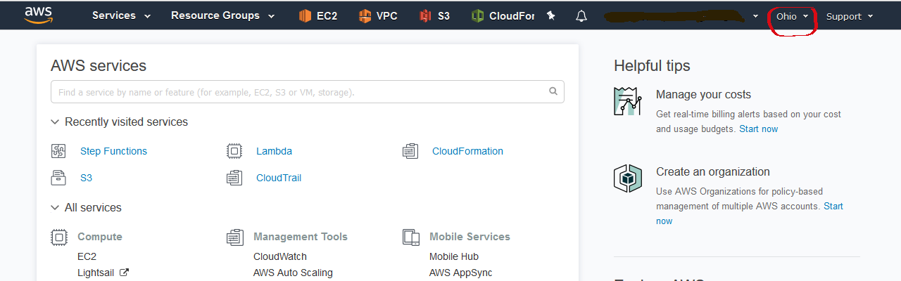
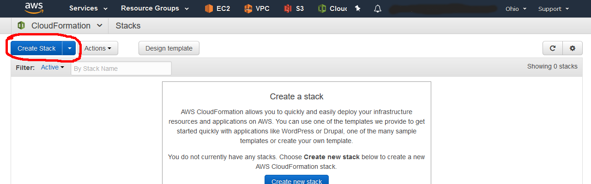
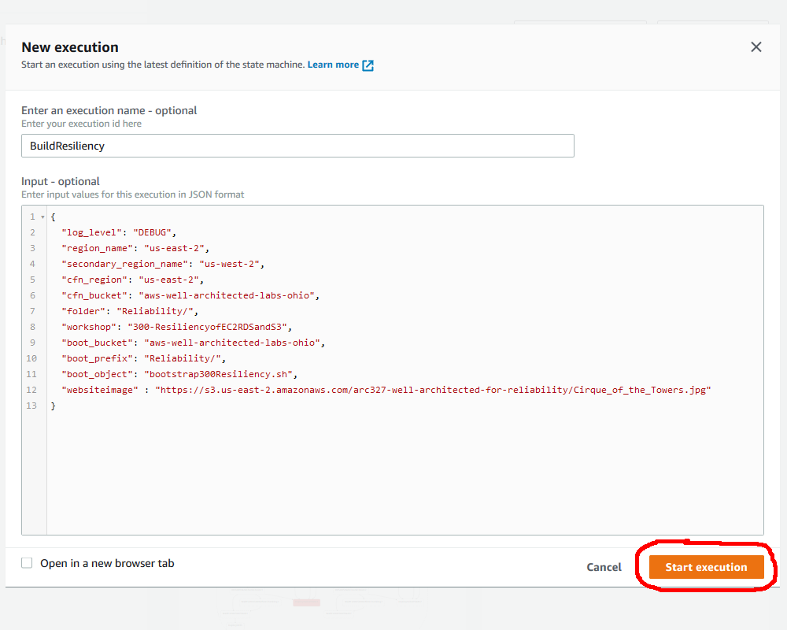
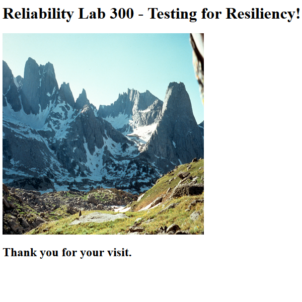
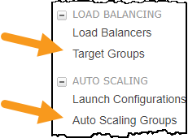
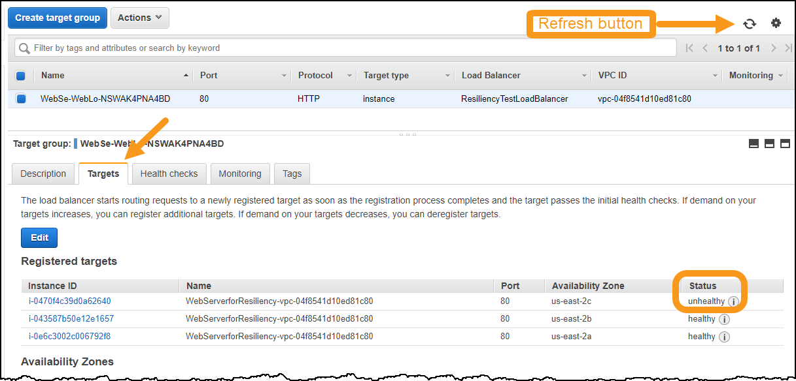
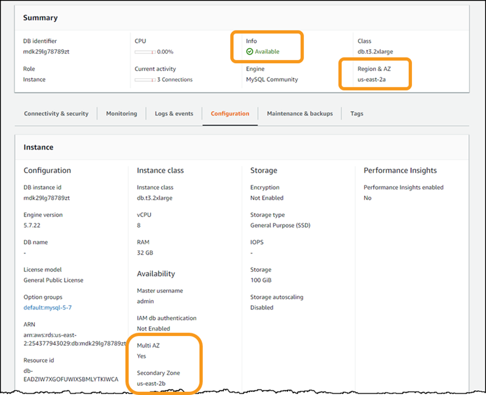
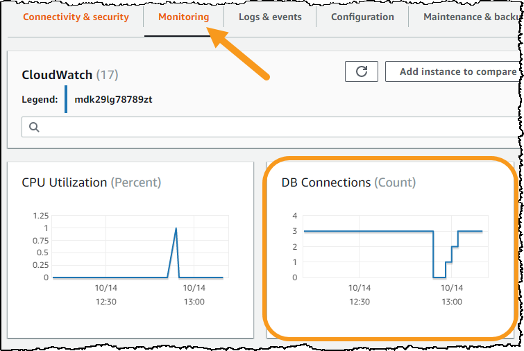
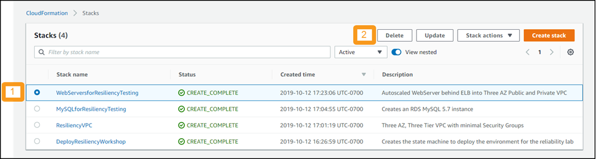
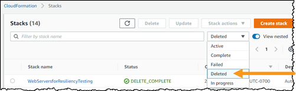

Level 300: Performing Resiliency Testing for EC2, RDS, and S3
Authors
- Rodney Lester, Reliability Lead, Well-Architected, AWS
- Adrian Hornsby, Tech Evangelist, AWS
- Seth Eliot, Resiliency Lead, Well-Architected, AWS
Table of Contents
- Deploy the Infrastructure
- Configure Execution Environment
- Test Resiliency Using Failure Injection
- Tear down this lab
1. Deploy the Infrastructure
You will create a multi-tier architecture using AWS and run a simple service on it. The service is a web server running on Amazon EC2 fronted by an Elastic Load Balancer reverse-proxy, with a data store on Amazon Relational Database Service (RDS).

1.1 Log into the AWS console
If you are attending an in-person workshop and were provided with an AWS account by the instructor:
- Follow the instructions here for accessing your AWS account
- Note: As part of these instructions you are directed to copy and save AWS credentials for your account. Please do so as you will need them later
If you are using your own AWS account:
- Sign in to the AWS Management Console as an IAM user who has PowerUserAccess or AdministratorAccess permissions, to ensure successful execution of this lab.
- You will need the AWS credentials,
AWS_ACCESS_KEY_IDandAWS_SECRET_ACCESS_KEY, of this IAM user for later use in this lab.- If you do not have this IAM user's credentials or you wish to create a new IAM user with needed permissions, follow the instructions here to create them
1.2 Checking for existing service-linked roles
If you are attending an in-person workshop and were provided with an AWS account by the instructor: Skip this step and go directly to step Create the "deployment machine".
If you are using your own AWS account: Follow these steps, and then return here and resume with the following instructions.
1.3 Create the "deployment machine"
Here you will build a state machine using AWS Step Functions and AWS Lambda that orchestrates the deployment of the multi-tier infrastructure. This is not the service infrastructure itself, but meta-infrastructure we use to build the actual infrastructure.
Learn more: After the lab see this blog post on how AWS Step Functions and AWS CodePipelines can work together to deploy your infrastructure
-
Decide which deployment option you will use for this lab. It can be run as single region or multi region (two region) deployment.
- single region is faster to get up and running
- multi region enables you to test some additional aspects of cross-regional resilience.
- Decide on one of these options, then in later steps choose the appropriate instructions for the option you have chosen. If you are attending an in-person workshop, your instructor will specify which to use.
-
Get the CloudFormation template: Download the appropriate file (You can right-click then choose download; or you can right click and copy the link to use with
wget)- single region: download CloudFormation template here
- multi region: download CloudFormation template here
-
Ensure you have selected the Ohio region. This region is also known as us-east-2, which you will see referenced throughout this lab. 
-
Go to the AWS CloudFormation console at https://console.aws.amazon.com/cloudformation and click “Create Stack:” 
-
Leave "Prepare template" setting as-is
- 1 - For "Template source" select "Upload a template file"
- 2 - Specify the CloudFormation template you downloaded

-
Click the “Next” button. For "Stack name" enter:
DeployResiliencyWorkshop
-
On the same screen, for "Parameters" enter the appropriate values:
- If you are attending an in-person workshop and were provided with an AWS account by the instructor: Leave all the parameters at their default values
- If you are using your own AWS account: Set the first three parameters using these instructions and leave all other parameters at their default values.
- You optionally may review the default values of this CloudFormation template here
-
Click the “Next” button.
- On the "Configure stack options" page, click “Next” again
- On the "Review DeployResiliencyWorkshop" page, scroll to the bottom and tick the checkbox “I acknowledge that AWS CloudFormation might create IAM resources.”
- Click the “Create stack” button.

-
This will take you to the CloudFormation stack status page, showing the stack creation in progress.

This will take approximately a minute to deploy. When it shows statusCREATE_COMPLETE, then you are finished with this step.
1.4 Deploy infrastructure and run the service
-
Go to the AWS Step Function console at https://console.aws.amazon.com/states
-
On the Step Functions dashboard, you will see “State Machines” and you will have a new one named “DeploymentMachine-random characters.” Click on that state machine. This will bring up an execution console. Click on the “Start execution” button.

-
On the "New execution" dialog, for "Enter an execution name" delete the auto-generated name and replace it with:
BuildResiliency -
Then for "Input" enter JSON that will be used to supply parameter values to the Lambdas in the workflow.
-
single region uses the following values:
{ "log_level": "DEBUG", "region_name": "us-east-2", "cfn_region": "us-east-2", "cfn_bucket": "aws-well-architected-labs-ohio", "folder": "Reliability/", "workshop": "300-ResiliencyofEC2RDSandS3", "boot_bucket": "aws-well-architected-labs-ohio", "boot_prefix": "Reliability/", "websiteimage" : "https://s3.us-east-2.amazonaws.com/arc327-well-architected-for-reliability/Cirque_of_the_Towers.jpg" } -
multi region uses the values here
- Note: for
websiteimageyou can supply an alternate link to a public-read-only image in an S3 bucket you control. This will allow you to run S3 resiliency tests as part of the lab -
Then click the “Start Execution” button.

-
-
The "deployment machine" is now deploying the infrastructure and service you will use for resiliency testing.
Time until you can start... Single region Multi region EC2 failure injection test 15-20 min 15-20 min RDS and AZ failure injection tests 20-25 min 40-45 min Multi-region failure injection tests NA 50-55 min Total deployment time 20-25 min 50-55 min -
You can watch the state machine as it executes by clicking the icon to expand the visual workflow to the full screen.

-
You can also watch the CloudFormation stacks as they are created and transition from
CREATE_IN_PROGRESStoCREATE_COMPLETE.
-
Note: If you are in a workshop, the instructor will share background and technical information while your service is deployed.
-
You can start the first test (EC2 failure injection testing) when the web tier has been deployed in the Ohio region. Look for the
WaitForWebAppstep (for single region) orWaitForWebApp1step (for multi region) to have completed successfully. This will look something like this on the visual workflow.
- Above screen shot is for single region. for multi region see this diagram instead
1.5 View website for test web service
-
Go to the AWS CloudFormation console at https://console.aws.amazon.com/cloudformation.
- click on the
WebServersforResiliencyTestingstack - click on the "Outputs" tab
- For the Key
WebSiteURLcopy the value. This is the URL of your test web service.
- click on the
-
Click the value and it will bring up the website:

(image will vary depending on what you supplied for websiteimage)
2. Configure Execution Environment
Failure injection is a means of testing resiliency by which a specific failure type is simulated on a service and its response is assessed.
You have a choice of environments from which to execute the failure injections for this lab. Bash scripts are a good choice and can be used from a Linux command line. If you prefer Python, Java, Powershell, or C#, then instructions for these are also provided.
2.1 Setup AWS credentials and configuration
Your execution environment needs to be configured to enable access to the AWS account you are using for the workshop. This includes
-
Credentials - You identified these credentials back in step 1
- AWS access key
- AWS secret access key
- AWS session token (used in some cases)
-
Configuration
- Region: us-east-2
- Default output: JSON
Note: us-east-2 is the Ohio region
If you already know how to configure these, please do so now. If you need help or if you are planning to use PowerShell for this lab, then follow these instructions
2.2 Set up the bash environment
Using bash is an effective way to execute the failure injection tests for this workshop. The bash scripts make use of the AWS CLI. If you will be using bash, then follow the directions in this section. If you cannot use bash, then skip to the next section.
-
Prerequisites
-
awscliAWS CLI installed$ aws --version aws-cli/1.16.249 Python/3.6.8...- Version 1.1 or higher is fine
- If you instead got
command not foundthen see instructions here to installawscli
-
jqcommand-line JSON processor installed.$ jq --version jq-1.5-1-a5b5cbe- Version 1.4 or higher is fine
- If you instead got
command not foundthen see instructions here to installjq
-
-
Download the resiliency bash scripts from GitHub to a location convenient for you to execute them. You can use the following links to download the scripts:
-
Set the scripts to be executable.
chmod u+x fail_instance.sh chmod u+x failover_rds.sh chmod u+x fail_az.sh
2.3 Set up the programming language environment (for Python, Java, C#, or PowerShell)
If you will be using bash and executed the steps in the previous section, then you can skip this and go to the section: Test Resiliency Using Failure Injection
- If you will be using Python, Java, C#, or PowerShell for this workshop, click here for instructions on setting up your environment
3. Test Resiliency Using Failure Injection
Failure injection (also known as chaos testing) is an effective and essential method to validate and understand the resiliency of your workload and is a recommended practice of the AWS Well-Architected Reliability Pillar. Here you will initiate various failure scenarios and assess how your system reacts.
Preparation
Before testing, please prepare the following:
-
Region must be Ohio
- We will be using the AWS Console to assess the impact of our testing
-
Throughout this lab, make sure you are in the Ohio region
-
Get VPC ID
- A VPC (Amazon Virtual Private Cloud) is a logically isolated section of the AWS Cloud where you have deployed the resources for your service
- For these tests you will need to know the VPC ID of the VPC you created as part of deploying the service
- Navigate to the VPC management console: https://console.aws.amazon.com/vpc
- In the left pane, click Your VPCs
- 1 - Tick the checkbox next to ResiliencyVPC
- 2 - Copy the VPC ID

- Save the VPC ID - you will use later whenever
<vpc-id>is indicated in a command
-
Get familiar with the service website
- Point a web browser at the URL you saved from earlier. (If you do not recall this, then see these instructions)
- Note the availability_zone and instance_id
- Refresh the website several times watching these values
- Note the values change. You have deployed one web server per each of three Availability Zones.
- The AWS Elastic Load Balancer (ELB) sends your request to any of these three healthy instances.
- Refer to the diagram at the start of this Lab Guide to review your deployed system architecture.
Availability Zones (AZs) are isolated sets of resources within a region, each with redundant power, networking, and connectivity, housed in separate facilities. Each Availability Zone is isolated, but the Availability Zones in a Region are connected through low-latency links. AWS provides you with the flexibility to place instances and store data across multiple Availability Zones within each AWS Region for high resiliency. Learn more: After the lab see this whitepaper on regions and availability zones
3.1 EC2 failure injection
This failure injection will simulate a critical problem with one of the three web servers used by your service.
-
Before starting, view the deployment machine in the AWS Step Functions console to verify the deployment has reached the stage where you can start testing:
- single region:
WaitForWebAppshows completed (green) - multi region:
WaitForWebApp1shows completed (green)
- single region:
-
Navigate to the EC2 console at http://console.aws.amazon.com/ec2 and click Instances in the left pane.
-
There are three EC2 instances with a name beginning with WebServerforResiliency. For these EC2 instances note:
- Each has a unique Instance ID
- There is one instance per each Availability Zone
- All instances are healthy

-
Open up two more console in separate tabs/windows. From the left pane, open Target Groups and Auto Scaling Groups in separate tabs. You now have three console views open

-
To fail one of the EC2 instances, use the VPC ID as the command line argument replacing
<vpc-id>in one (and only one) of the scripts/programs below. (choose the language that you setup your environment for)Language Command Bash ./fail_instance.sh <vpc-id>Python python fail_instance.py <vpc-id>Java java -jar app-resiliency-1.0.jar EC2 <vpc-id>C# .\AppResiliency EC2 <vpc-id>PowerShell .\fail_instance.ps1 <vpc-id> -
The specific output will vary based on the command used, but will include a reference to the ID of the EC2 instance and an indicator of success. Here is the output for the Bash command. Note the
CurrentStateisshutting-down$ ./fail_instance.sh vpc-04f8541d10ed81c80 Terminating i-0710435abc631eab3 { "TerminatingInstances": [ { "CurrentState": { "Code": 32, "Name": "shutting-down" }, "InstanceId": "i-0710435abc631eab3", "PreviousState": { "Code": 16, "Name": "running" } } ] } -
Go to the EC2 Instances console which you already have open (or click here to open a new one)
-
Refresh it. (Note: it is usually more efficient to use the refresh button in the console, than to refresh the browser)

-
Observe the status of the instance reported by the script. In the screen cap below it is shutting down as reported by the script and will ultimately transition to terminated.

-
3.2 System response to EC2 instance failure
Watch how the service responds. Note how AWS systems help maintain service availability. Test if there is any non-availability, and if so then how long.
3.2.1 System availability
Refresh the service website several times. Note the following:
- Website remains available
- The remaining two EC2 instances are handling all the requests (as per the displayed
instance_id)
3.2.2 Load balancing
Load balancing ensures service requests are not routed to unhealthy resources, such as the failed EC2 instance.
-
Go to the Target Groups console you already have open (or click here to open a new one)
- If there is more than one target group, select the one with the Load Balancer named ResiliencyTestLoadBalancer
-
Click on the Targets tab and observe:
- Status of the instances in the group. The load balancer will only send traffic to healthy instances.
- When the auto scaling launches a new instance, it is automatically added to the load balancer target group.
- In the screen cap below the unhealthy instance is the newly added one. The load balancer will not send traffic to it until it is completed initializing. It will ultimately transition to healthy and then start receiving traffic.
-
Note the new instance was started in the same Availability Zone as the failed one. Amazon EC2 Auto Scaling automatically maintains balance across all of the Availability Zones that you specify.

-
From the same console, now click on the Monitoring tab and view metrics such as Unhealthy hosts and Healthy hosts

3.2.3 Auto scaling
Autos scaling ensures we have the capacity necessary to meet customer demand. The auto scaling for this service is a simple configuration that ensures at least three EC2 instances are running. More complex configurations in response to CPU or network load are also possible using AWS.
-
Go to the Auto Scaling Groups console you already have open (or click here to open a new one)
- If there is more than one auto scaling group, select the one with the name that starts with WebServersforResiliencyTesting
-
Click on the Activity History tab and observe:
- The screen cap below shows that all three instances were successfully started at 17:25
-
At 19:29 the instance targeted by the script was put in draining state and a new instance ending in ...62640 was started, but was still initializing. The new instance will ultimately transition to Successful status

Draining allows existing, in-flight requests made to an instance to complete, but it will not send any new requests to the instance. Learn more: After the lab see this blog post for more information on draining.
Learn more: After the lab see Auto Scaling Groups to learn more how auto scaling groups are setup and how they distribute instances, and Dynamic Scaling for Amazon EC2 Auto Scaling for more details on setting up auto scaling that responds to demand
3.2.4 EC2 failure injection - conclusion
Deploying multiple servers and Elastic Load Balancing enables a service suffer the loss of a server with no availability disruptions as user traffic is automatically routed to the healthy servers. Amazon Auto Scaling ensures unhealthy hosts are removed and replaced with healthy ones to maintain high availability.
3.3 RDS failure injection
This failure injection will simulate a critical failure of the Amazon RDS DB instance.
-
Before starting, view the deployment machine in the AWS Step Functions console to verify the deployment has reached the stage where you can start testing:
- single region:
WaitForMultiAZDBshows completed (green) - multi region: both
WaitForRDSRRStack1andCheckRDSRRStatus1show completed (green)
- single region:
-
Before you initiate the failure simulation, refresh the service website several times. Every time the image is loaded, the website writes a record to the Amazon RDS database
-
Click on click here to go to other page and it will show the latest ten entries in the Amazon RDS DB
- The DB table shows "hits" on our image page
- Website URL access requests are shown here for traffic against the image page. These include IPs of browser traffic as well as IPs of load balancer health checks
- For each region the AWS Elastic Load Balancer makes these health checks, so you will see three IP addresses from these
- Click on click here to go to other page again to return to the image page
-
Go to the RDS Dashboard in the AWS Console at http://console.aws.amazon.com/rds
-
From the RDS dashboard
- Click on "DB Instances (n/40)"
- Click on the DB identifier for your database (if you have more than one database, refer to the VPC ID to find the one for this workshop)
- If running the multi-region deployment, select the DB instance with Role=Master
- Select the Configuration tab
-
Look at the configured values. Note the following:
- Value of the Info field is Available
- RDS DB is configured to be Multi-AZ. The primary DB instance is in AZ us-east-2a and the standby DB instance is in AZ us-east-2b 
-
To failover of the RDS instance, use the VPC ID as the command line argument replacing
<vpc-id>in one (and only one) of the scripts/programs below. (choose the language that you setup your environment for)Language Command Bash ./failover_rds.sh <vpc-id>Python python fail_rds.py <vpc-id>Java java -jar app-resiliency-1.0.jar RDS <vpc-id>C# .\AppResiliency RDS <vpc-id>PowerShell .\failover_rds.ps1 <vpc-id> -
The specific output will vary based on the command used, but will include some indication that the your Amazon RDS Database is being failedover:
Failing over mdk29lg78789zt
3.4 System response to RDS instance failure
Watch how the service responds. Note how AWS systems help maintain service availability. Test if there is any non-availability, and if so then how long.
3.4.1 System availability
-
The website is not available. Some errors you might see reported:
- No Response / Timeout: Request was successfully sent to EC2 server, but server no longer has connection to an active database
- 504 Gateway Time-out: Amazon Elastic Load Balancer did not get a response from the server. This can happen when it has removed the servers that are unable to respond and added new ones, but the new ones have not yet finished initialization, and there are no healthy hosts to receive the request
- 502 Bad Gateway: The Amazon Elastic Load Balancer got a bad request from the server
- An error you will not see is This site can’t be reached. This is because the Elastic Load Balancer has a node in each of the three Availability Zones and is always available to serve requests.
-
Continue on to the next steps, periodically returning to attempt to refresh the website.
3.4.2 Failover to standby
-
On the database console Configuration tab
- Refresh and note the values of the Info field. It will ultimately return to Available when the failover is complete.
-
Note the AZs for the primary and standby instances. They have swapped as the standby has no taken over primary responsibility, and the former primary has been restarted. (After RDS failover it can take several minutes for the console to update as shown below. The failover has however completed)

-
From the AWS RDS console, click on the Logs & events tab and scroll down to Recent events. You should see entries like those below. In this case failover took less than a minute.
Mon, 14 Oct 2019 19:53:37 GMT - Multi-AZ instance failover started. Mon, 14 Oct 2019 19:53:45 GMT - DB instance restarted Mon, 14 Oct 2019 19:54:21 GMT - Multi-AZ instance failover completed
3.4.2 EC2 server replacement
-
From the AWS RDS console, click on the Monitoring tab and look at DB connections
- As the failover happens the existing three servers all cannot connect to the DB
- AWS Auto Scaling detects this (any server not returning an http 200 status is deemed unhealthy), and replaces the three EC2 instances with new ones that establish new connections to the new RDS primary instance
-
The graph shows an unavailability period of about four minutes until at least one DB connection is re-established

-
[optional] Go to the Auto scaling group and AWS Elastic Load Balancer Target group consoles to see how EC2 instance and traffic routing was handled
3.4.3 RDS failure injection - conclusion
- AWS RDS Database failover took less than a minute
- Time for AWS Auto Scaling to detect that the instances were unhealthy and to start up new ones took four minutes. This resulted in a four minute non-availability event.
Learn more: After the lab see High Availability (Multi-AZ) for Amazon RDS for more details on high availability and failover support for DB instances using Multi-AZ deployments.
| High Availability (Multi-AZ) for Amazon RDS |
|---|
| The primary DB instance switches over automatically to the standby replica if any of the following conditions occur: |
| An Availability Zone outage |
| The primary DB instance fails |
| The DB instance's server type is changed |
| The operating system of the DB instance is undergoing software patching |
| A manual failover of the DB instance was initiated using Reboot with failover |
3.6 AZ failure injection
This failure injection will simulate a critical problem with one of the three AWS Availability Zones (AZs) used by your service. AWS Availability Zones are powerful tools for helping build highly available applications. If an application is partitioned across AZs, companies are better isolated and protected from issues such as lightning strikes, tornadoes, earthquakes and more.
-
Go to the RDS Dashboard in the AWS Console at http://console.aws.amazon.com/rds and note which Availability Zone the AWS RDS primary DB instance is in.
- Note: If you previously ran the RDS Failure Injection test, you must wait until the console shows the AZs for the primary and standby instances as swapped, before running this test
- A good way to run the AZ failure injection is first in an AZ other than this - we'll call this Scenario 1
- Then try it again in the same AZ as the AWS RDS primary DB instance - we'll call this Scenario 2
- Taking down two out of the three AZs this way is an unlikely use case, however it will show how AWS systems work to maintain service integrity despite extreme circumstances.
- And executing this way illustrates the impact and response under the two different scenarios.
-
To simulate failure of an AZ, select one of the Availability Zones used by your service (
us-east-2a,us-east-2b, orus-east-2c) as<az>- For scenario 1 select an AZ that is neither primary nor secondary for your RDS DB instance. Given the following RDS console you would choose
us-east-2c - For scenario 2 select the AZ that is primary for your RDS DB instance. Given the following RDS console you would choose
us-east-2b

- For scenario 1 select an AZ that is neither primary nor secondary for your RDS DB instance. Given the following RDS console you would choose
-
use your VPC ID as
<vpc-id> -
Select one (and only one) of the scripts/programs below. (choose the language that you setup your environment for).
Language Command Bash ./fail_az.sh <az> <vpc-id>Python python fail_az.py <vpc-id> <az>Java java -jar app-resiliency-1.0.jar AZ <vpc-id> <az>C# .\AppResiliency AZ <vpc-id> <az>PowerShell .\fail_az.ps1 <az> <vpc-id> -
The specific output will vary based on the command used.
- Note whether an RDS failover was initiated. This would be the case if you selected the AZ containing the AWS RDS primary DB instance
3.7 System response to AZ failure
Watch how the service responds. Note how AWS systems help maintain service availability. Test if there is any non-availability, and if so then how long.
3.7.1 System availability
Refresh the service website several times
- Scenario 1: If you selected an AZ not containing the AWS RDS primary DB instance then you should see uninterrupted availability
- Scenario 2: If you selected the AZ containing the AWS RDS primary DB instance, then an availability loss similar to what you saw with RDS fault injection testing will occur.
3.7.2 Scenario 1 - Load balancer and web server tiers
This scenario is similar to the EC2 failure injection test because there is only one EC2 server per AZ in our architecture. Look at the same screens you as for that test:
- EC2 Instances
- Load Balancer Target group
- Auto Scaling Groups
One difference from the EC2 failure test that you will observe is that auto scaling will bring up the replacement EC2 instance in an AZ that already has an EC2 instance as it attempts to balance the requested three EC2 instances across the remaining AZs.
3.7.3 Scenario 2 - Load balancer, web server, and data tiers
This scenario is similar to a combination of the RDS failure injection along with EC2 failure injection. In addition to the EC2 related screens look at the Amazon RDS console, navigate to your DB screen and observe the following tabs:
- Configuration
- Monitoring
- Logs & Events
3.7.4 AZ failure injection - conclusion
This similarity between scenario 1 and the EC2 failure test, and between scenario 2 and the RDS failure test is illustrative of how an AZ failure impacts your system. The resources in that AZ will have no or limited availability. With the strong partitioning and isolation between Availability Zones however, resources in the other AZs continue to provide your service with needed functionality. Scenario 1 results in loss of the load balancer and web server capabilities in one AZ, while Scenario 2 adds to that the additional loss of the data tier. By ensuring that every tier of your system is in multiple AZs, you create a partitioned architecture resilient to failure.
3.7.4 AZ failure recovery
This step is optional. To simulate the AZ returning to health do the following:
- Go to the Auto Scaling Group console
- Select the WebServersforResiliencyTesting auto scaling group
- Actions >> Edit
- In the Subnet field add any ResiliencyVPC-PrivateSubnets that are missing (there should be three total) and Save
- Go to the Network ACL console
- Look at the NACL entries for the VPC called ResiliencyVPC
-
For any of these NACLs that are not Default do the following
- Select the NACL
- Actions >> Edit subnet associations
- Uncheck all boxes and click Edit
- Actions >> Delete network ACL
-
Note how the auto scaling redistributes the EC2 serves across the availability zones
3.8 S3 failure injection
- Failure of S3 means that the image will not be available
- You may ONLY do this testing if you supplied your own
websiteimagereference to an S3 bucket you control
3.8.1 Bucket name
You will need to know the bucket name where your image is. For example if the websiteimage value you supplied was "https://s3.us-east-2.amazonaws.com/my-awesome-bucketname/my_image.jpg", then the bucket name is my-awesome-bucketname
For this failure simulation it is most straightforward to use the AWS Console as follows. (If you are interested in doing this using the AWS CLI then see here - choose either AWS Console or AWS CLI)
AWS Console
- Navigate to the S3 console: https://console.aws.amazon.com/s3
- Select the bucket name where the image is located
- Select the object, then select the "Permissions" tab
- Select the "Public Access" radio button, and deselect the "Read object" checkbox and Save
- To re-enable access (after testing), do the same steps, tick the "Read object" checkbox and Save
3.8.3 System response to S3 failure
What is the expected effect? How long does it take to take effect?
- Note that due to browser caching you may still see the image on refreshing the site. On most systems Shift-F5 does a clean refresh with no cache
How would you diagnose if this is a larger problem than permissions?
3.9 More testing you can do
You can use drift detection in the CloudFormation console to see what had changed, or work on code to heal the failure modes.
4. Tear down this lab
If you are attending an in-person workshop and were provided with an AWS account by the instructor:
- There is no need to tear down the lab. Feel free to continue exploring. Log out of your AWS account when done.
If you are using your own AWS account:
- You may leave these resources deployed for as long as you want. When you are ready to delete these resources, see the following instructions
Remove manually provisioned resources
Some resources were created by the failure simulation scripts. You need to remove these first
- Go to the Network ACL console
- Look at the NACL entries for the VPC called ResiliencyVPC
- For any of these NACLs that are not Default do the following
- Select the NACL
- Actions >> Edit subnet associations
- Uncheck all boxes and click Edit
- Actions >> Delete network ACL
Remove AWS CloudFormation provisioned resources
As part of lab setup you have deployed several AWS CloudFormation stacks. These directions will show you:
- How to delete an AWS CloudFormation stack
- In what specific order the stacks must be deleted
How to delete an AWS CloudFormation stack
- Go to the AWS CloudFormation console: https://console.aws.amazon.com/cloudformation
-
Select the CloudFormation stack to delete and click Delete

-
In the confirmation dialog, click Delete stack
- The Status changes to DELETE_IN_PROGRESS
- Click the refresh button to update and status will ultimately progress to DELETE_COMPLETE
-
When complete, the stack will no longer be displayed. To see deleted stacks use the drop down next to the Filter text box.

-
To see progress during stack deletion
- Click the stack name
- Select the Events column
- Refresh to see new events
Delete workshop CloudFormation stacks
- Since AWS resources deployed by AWS CloudFormation stacks may have dependencies on the stacks that were created before, then deletion must occur in the opposite order they were created
- Stacks with the same ordinal can be deleted at the same time. All stacks for a given ordinal must be DELETE_COMPLETE before moving on to the next ordinal
Single region
If you deployed the single region option, then delete your stacks in the following order
| Order | CloudFormation stack |
|---|---|
| 1 | WebServersforResiliencyTesting |
| 1 | MySQLforResiliencyTesting |
| 2 | ResiliencyVPC |
| 2 | DeployResiliencyWorkshop |
Multi region
If you deployed the multi region option, then see these instructions for the order in which to delete the CloudFormation stacks
Delete remaining resources
Delete Lambda execution role used to create custom resource
This role was purposely not deleted by the CloudFormation stack, because CloudFormation needs it to delete the custom resource it was used to create. Choose ONE: AWS CLI or AWS Console.
- Do this step only after ALL CloudFormation stacks are DELETE_COMPLETE
Using AWS CLI:
aws iam delete-role-policy --role-name LambdaCustomResourceRole-SecureSsmForRds --policy-name LambdaCustomResourcePolicy
aws iam delete-role --role-name LambdaCustomResourceRole-SecureSsmForRds
Using AWS Console:
- Go to the IAM Roles Console: https://console.aws.amazon.com/iam/home#/roles
- Search for
SecureSsmForRds - Check the box next to
LambdaCustomResourceRole-SecureSsmForRds - Click Delete role button
- Click Yes, delete button
Delete Systems Manager parameter
The password(s) for your Amazon RDS instances were stored in AWS Systems Manager secure parameter store. These steps will verify the parameter(s) were deleted, and if not then guide you to deleting them. Choose ONE: AWS CLI or AWS Console.
- single region You only need to do the following steps in us-east-2
- multi region Do the following steps for both us-east-2 and us-west-2
Using AWS CLI:
- In the following command use the workshop name supplied in step 1.4.4. when you ran the step function state machine. If you kept the defaults, the command will work as-is:
aws ssm delete-parameter --name 300-ResiliencyofEC2RDSandS3
If you get ParameterNotFound then the password was already deleted by the CloudFormation stack (as expected).
Using AWS Console:
- Select the region
- Wait until ResiliencyVPC CloudFormation stack is DELETE_COMPLETE in the region
- Go to the AWS Console for AWS Systems Manager parameter store
- Look for the parameter created for your infrastructure. If you used our default values, this will be named 300-ResiliencyofEC2RDSandS3
- If it is not present (check all regions you deployed to) then you are finished
- If it is present then
- Click on the parameter name
- Click the Delete button
- Click Delete again
References & useful resources
- EC2 Auto Scaling Groups
- What Is an Application Load Balancer?
- High Availability (Multi-AZ) for Amazon RDS
- Amazon RDS Under the Hood: Multi-AZ
- Regions and Availability Zones
- Injecting Chaos to Amazon EC2 using AWS System Manager
- Build a serverless multi-region, active-active backend solution in an hour
License
Documentation License
Licensed under the Creative Commons Share Alike 4.0 license.
Code License
Licensed under the Apache 2.0 and MITnoAttr License.
Copyright 2019 Amazon.com, Inc. or its affiliates. All Rights Reserved.
Licensed under the Apache License, Version 2.0 (the "License"). You may not use this file except in compliance with the License. A copy of the License is located at
https://aws.amazon.com/apache2.0/
or in the "license" file accompanying this file. This file is distributed on an "AS IS" BASIS, WITHOUT WARRANTIES OR CONDITIONS OF ANY KIND, either express or implied. See the License for the specific language governing permissions and limitations under the License.